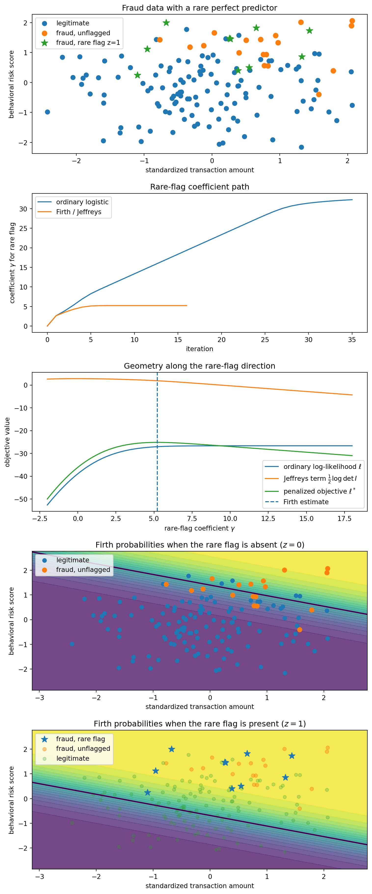

2026-04-24
A personal motivation sits behind this note. My friend and former professor Andrew P. Mullhaupt opened my eyes to a simple but easily forgotten point: bias is not always a disease. Used carelessly it distorts; used deliberately, with an understanding of the geometry, it can be a remedy.
Firth’s adjustment was introduced as a frequentist bias-reduction device — modify the likelihood score so that the leading O(n^{-1}) bias of the MLE disappears (Firth 1993). Jeffreys’ prior is a geometric volume element: if Fisher information is the metric on a statistical model, then |i(\beta)|^{1/2}\,d\beta is the natural volume form on that model. In canonical-link exponential-family GLMs, these two ideas meet:
\partial_s\left\{\tfrac{1}{2}\log |i(\beta)|\right\} = A_s(\beta),
where A_s is Firth’s adjustment to the sth score component.
Kosmidis and Firth’s 2009 and 2021 papers develop this geometric picture in two directions. The 2009 paper extends bias reduction to exponential-family nonlinear models, where the model manifold bends because the predictor itself is nonlinear. The 2021 paper studies binomial-response GLMs, where the important feature isn’t just curvature but the boundary — fitted probabilities can run to 0 or 1, Fisher volume collapses, and ordinary maximum likelihood can fail to exist.
The distinction I want to keep visible throughout: curvature explains first-order bias, while the boundary explains non-existence under separation. Firth’s adjustment touches both, but the mechanisms are different.
The space of distributions as a landscape. Think of every probability distribution on a fixed sample space as a point in an abstract space \mathcal{P}. A parametric model \mathcal{M} = \{f(\cdot;\beta) : \beta \in \mathbb{R}^p\} is a p-dimensional surface inside \mathcal{P}. As \beta varies, f(\cdot;\beta) traces out the model manifold.
Fisher information is the ruler. For nearby parameters \beta and \beta + d\beta,
\mathrm{KL}(f_\beta \,\|\, f_{\beta+d\beta}) = \tfrac{1}{2}\, d\beta^\top i(\beta)\, d\beta + o(\|d\beta\|^2),
so Fisher information is the metric tensor — it tells us the squared length of an infinitesimal step on the model.
The MLE as projection. A sample y_1,\ldots,y_n defines an empirical distribution \hat{F}_n that is usually not on \mathcal{M}. Maximum likelihood chooses the model point closest to \hat{F}_n in KL sense — geometrically, dropping a perpendicular from the empirical distribution to the model manifold.
Why curvature creates bias. Take a curve in the plane, say a parabola. Put a symmetric cloud of noisy points around a target point P_0 on that curve and project each point perpendicularly onto the curve. If the curve were a straight line, the projected points would remain symmetric around P_0. But if the curve bends, the projections drift. That drift is the geometric intuition behind the O(n^{-1}) bias of the MLE. In McCullagh-style notation:
b^s(\beta) = \kappa^{s,a}\kappa^{b,c}\left\{\tfrac{1}{2}\kappa_{a,b,c} + \kappa_{ab,c}\right\} + O(n^{-2}),
where \kappa_{r,s} = E(U_r U_s) is Fisher information, \kappa_{r,s,t} = E(U_r U_s U_t), \kappa_{rs,t} = E(\partial_{rs}\ell\, U_t), raised indices denote the inverse of the information matrix, and repeated indices are summed (Cox and Snell 1968).
Efron’s statistical curvature gives one precise way to measure how much a statistical model bends inside a surrounding exponential family (Efron 1975). A model that is an affine subspace in natural-parameter space has zero Efron curvature — but that doesn’t mean every coordinate representation of its MLE is exactly unbiased. For example, \bar{Y} is unbiased for \pi in a Bernoulli model, but \operatorname{logit}(\bar{Y}) is biased for \operatorname{logit}(\pi). The curvature statement is about the family as a geometric object; finite-sample bias can also come from nonlinear coordinates and boundary effects.
Firth’s adjustment undoes the drift. If the MLE drifts by b(\beta), modify the score in the opposite direction:
\tilde{U}_s(\beta) = U_s(\beta) + A_s(\beta), \qquad A_s(\beta) = -\kappa_{s,a}(\beta)\, b^a(\beta).
The solution of \tilde{U}(\tilde\beta) = 0 has bias of order O(n^{-2}) under standard regularity conditions (Firth 1993). In the projection picture, the Firth estimator corrects the first-order displacement caused by the geometry of the projection.
Jeffreys’ prior is the Fisher volume element. The Jeffreys prior \pi_J(\beta) \propto |i(\beta)|^{1/2} is the natural volume element on the manifold — the analogue of \sqrt{|g|}\,dx in Riemannian geometry, invariant under smooth reparametrization.
The canonical-link coincidence. For canonical-link exponential-family GLMs,
\partial_s\left\{\tfrac{1}{2}\log |i(\beta)|\right\} = A_s(\beta).
Two seemingly different prescriptions coincide: modify the score to remove the leading bias, or maximize the log-likelihood plus the Jeffreys log-volume penalty. This is the central identity behind the note.
2009: nonlinear predictors and extra curvature. In an ordinary GLM, the predictor is linear: \eta_i(\beta) = x_i^\top\beta. With a canonical link, the model is an affine subspace of the saturated natural-parameter space. With a non-canonical link or a nonlinear predictor, the embedding bends.
Kosmidis and Firth study exponential-family nonlinear models where \eta_i(\beta) need not be linear (Kosmidis and Firth 2009). Let F_{ir}(\beta) = \partial\eta_i/\partial\beta_r and W the diagonal matrix of working weights. The weighted hat matrix is
H(\beta) = W^{1/2}F(F^\top W F)^{-1}F^\top W^{1/2}.
There are two sources of geometry here: link curvature (from the relationship between \eta_i and the distributional parameter) and predictor curvature (from second derivatives \partial^2\eta_i/\partial\beta_r\partial\beta_s). The 2009 paper gives a compact form for the adjusted score,
A(\beta) = F(\beta)^\top W(\beta)\xi(\beta),
where \xi_i combines the leverage term from the diagonal of H with additional terms involving the second derivatives of \eta_i(\beta). When \eta_i is linear in \beta, the predictor-curvature term vanishes and the expression reduces to the familiar GLM adjustment. The method modifies Fisher scoring with a term built from objects already used in GLM fitting:
\beta^{(k+1)} = \beta^{(k)} + i\{\beta^{(k)}\}^{-1}\left[U\{\beta^{(k)}\} + A\{\beta^{(k)}\}\right].
2021: binomial GLMs, finiteness, and the boundary. For binomial GLMs Y_i \sim \mathrm{Bin}(m_i, \pi_i)/m_i, g(\pi_i) = x_i^\top\beta, the Fisher information is i(\beta) = X^\top W(\beta)X with weights w_i(\beta) = m_i(d\pi_i/d\eta_i)^2/[\pi_i(1-\pi_i)]. The model has a boundary: as \pi_i \to 0 or \pi_i \to 1, the weights collapse and the Fisher volume collapses: |i(\beta)|^{1/2} \to 0.
Under complete or quasi-complete separation, ordinary maximum likelihood tries to move toward exactly that boundary. Along a separating ray, the log-likelihood approaches a finite ceiling but doesn’t attain it at a finite parameter value — the ordinary MLE doesn’t exist.
Kosmidis and Firth’s 2021 result shows that, for standard binomial links (logit, probit, complementary log-log, log-log, cauchit), the Jeffreys-penalized estimator
\hat\beta_J = \arg\max_\beta \left\{\ell(\beta) + \tfrac{1}{2}\log\det X^\top W(\beta)X\right\}
is finite for every realized sample (Kosmidis and Firth 2021). The proof idea is geometric: separation lets \ell(\beta) plateau as \|\beta\| \to \infty, but the same motion drives |i(\beta)|^{1/2} \to 0, so \frac{1}{2}\log\det i(\beta) \to -\infty and the penalized objective turns downward. The Jeffreys term acts as an infinite wall at the boundary.
A useful applied instance is rare-event fraud classification. Imagine a binary feature z = \mathbf{1}\{\text{new device and foreign IP}\}. In a small training set, this rare flag might occur only among fraudulent transactions — not because it’s truly deterministic, but because the sample is quasi-completely separated.
In the logistic GLM \Pr(Y=1\mid x,z) = \operatorname{logit}^{-1}(\beta_0 + \beta_1 x_1 + \beta_2 x_2 + \gamma z), if all observations with z=1 have Y=1, the ordinary likelihood is increased by sending \gamma \to +\infty and the MLE doesn’t exist. The Firth/Kosmidis estimator keeps \gamma finite because, along the same direction, I_{\gamma\gamma}(\beta) = \sum_i \pi_i(1-\pi_i)z_i^2 \to 0 — the information in the rare-flag direction disappears at the boundary, so the Jeffreys term penalizes the escape.
For canonical logistic regression the Firth adjusted score is
U^*(\beta) = X^\top\{y - p + h(\tfrac{1}{2} - p)\},
where h_i are the diagonal elements of the weighted hat matrix H = W^{1/2}X(X^\top W X)^{-1}X^\top W^{1/2}.
To make the example concrete, the post generates a small synthetic fraud dataset and compares the ordinary Newton path with the Firth/Jeffreys path. The setup code is hidden; the visible object is the coefficient path, the Fisher-volume barrier, and the two fitted probability surfaces.

Each point is a transaction. Blue points are legitimate (Y=0, z=0), orange are fraudulent but unflagged (Y=1, z=0), green stars are fraudulent with the rare flag (Y=1, z=1). The training sample contains no legitimate flagged transaction, so the rare flag perfectly separates part of the data.
Panel C is the geometric story in one picture: the likelihood likes large \gamma, but the Fisher-volume term goes to -\infty as the model approaches a boundary point where the flagged Bernoulli distributions become point masses. The penalized objective turns over and has a finite maximum.
Panels D and E show fitted Firth probabilities under z=0 and z=1 respectively. The rare flag shifts the log-odds surface upward by the finite Firth estimate \hat\gamma — strong evidence of fraud, but not an infinite rule. Firth doesn’t merely find a separating line. It gives a finite probabilistic decision boundary, and the estimator stays inside the finite part of the statistical manifold.
Consider a canonical exponential-family GLM with fixed dispersion \phi and \theta_i = \eta_i = x_i^\top\beta. The density is
f(y_i;\theta_i,\phi) = \exp\left\{\frac{y_i\theta_i - b(\theta_i)}{\phi} + c(y_i,\phi)\right\},
with \mu_i = b'(\theta_i), \operatorname{Var}(Y_i) = \phi b''(\theta_i), score U_r(\beta) = \phi^{-1}\sum_i(y_i-\mu_i)x_{ir}, and information i_{rs}(\beta) = \phi^{-1}\sum_i b''(\theta_i)x_{ir}x_{is}.
Differentiating the information gives the canonical-link identity:
\partial_t i_{rs}(\beta) = \phi^{-1}\sum_i b'''(\theta_i)x_{it}x_{ir}x_{is} = \kappa_{t,r,s}(\beta). \tag{1}
For canonical GLMs the Cox–Snell bias reduces to b^s(\beta) = -\frac{1}{2}i^{sa}i^{bc}\kappa_{a,b,c}(\beta), so Firth’s adjustment is
A_s(\beta) = \tfrac{1}{2}i^{cd}\kappa_{s,c,d}(\beta).
By Jacobi’s formula, \partial_s P(\beta) = \frac{1}{2}\mathrm{tr}\{i(\beta)^{-1}\partial_s i(\beta)\} = \frac{1}{2}i^{cd}\partial_s i_{cd}, and using (1):
\partial_s\left\{\tfrac{1}{2}\log\det i(\beta)\right\} = \tfrac{1}{2}i^{cd}\kappa_{s,c,d}(\beta) = A_s(\beta) = -i_{sa}(\beta)b^a(\beta).
Adding the Jeffreys score is exactly Firth’s first-order bias correction in canonical-link GLMs.
Let Y_i \sim \mathrm{Bernoulli}(\pi) and \beta = \operatorname{logit}(\pi). Then i(\beta) = n\pi(1-\pi) and \kappa_{\beta,\beta,\beta} = n\pi(1-\pi)(1-2\pi). The Cox–Snell bias is
b^\beta = \frac{2\pi-1}{2n\pi(1-\pi)},
agreeing with the delta method applied to \hat\beta = \operatorname{logit}(\bar{Y}). The Jeffreys adjustment is \partial_\beta\{\frac{1}{2}\log i(\beta)\} = \frac{1}{2}(1-2\pi), giving adjusted score equation
\sum_i y_i - n\pi + \tfrac{1}{2}(1-2\pi) = 0,
which solves to \tilde\pi = (S + 1/2)/(n+1) — the familiar “add half a success and half a failure” form.
For a one-parameter curved exponential family embedded in the Bernoulli natural-parameter space, with \dot\theta = \partial\theta/\partial\beta and \ddot\theta = \partial^2\theta/\partial\beta^2, Efron’s curvature is
\gamma^2(\beta) = \frac{(\ddot\theta^\top W\ddot\theta)(\dot\theta^\top W\dot\theta) - (\dot\theta^\top W\ddot\theta)^2}{(\dot\theta^\top W\dot\theta)^3}.
For scalar logistic regression, \theta_i = \beta x_i so \ddot\theta_i = 0 and \gamma^2(\beta) = 0 — the model is a straight line in natural-parameter space. For scalar probit regression, \theta_i = \log(\Phi(\beta x_i)/(1-\Phi(\beta x_i))) is nonlinear, \ddot\theta is generally not proportional to \dot\theta, and curvature is positive. The probit model is a curved submodel.
D. R. Cox and E. J. Snell. “A general definition of residuals.” Journal of the Royal Statistical Society: Series B 30(2), 1968.
Bradley Efron. “Defining the curvature of a statistical problem, with applications to second order efficiency.” The Annals of Statistics 3(6), 1975.
David Firth. “Bias reduction of maximum likelihood estimates.” Biometrika 80(1), 1993.
Harold Jeffreys. Theory of Probability. Oxford University Press, 3rd ed., 1961.
Ioannis Kosmidis and David Firth. “Bias reduction in exponential family nonlinear models.” Biometrika 96(4), 2009.
Ioannis Kosmidis and David Firth. “Jeffreys-prior penalty, finiteness and shrinkage in binomial-response generalized linear models.” Biometrika 108(1), 2021.
Peter McCullagh. Tensor Methods in Statistics. Chapman and Hall, 1987.
@misc{miryusupov2026curvaturevolume,
author = {Miryusupov, Shohruh},
title = {Curvature, Volume, and the Boundary},
year = {2026},
howpublished = {Research note},
url = {https://www.miryusupov.com/blog/posts/kosmidis-firth/index.html}
}